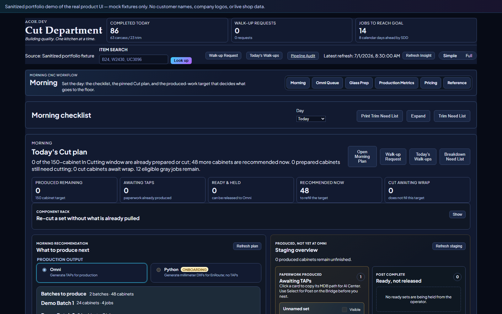
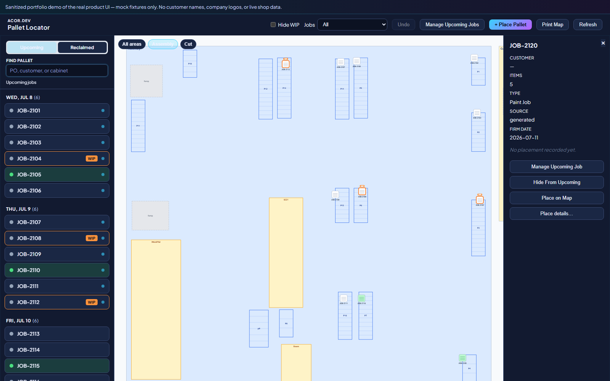
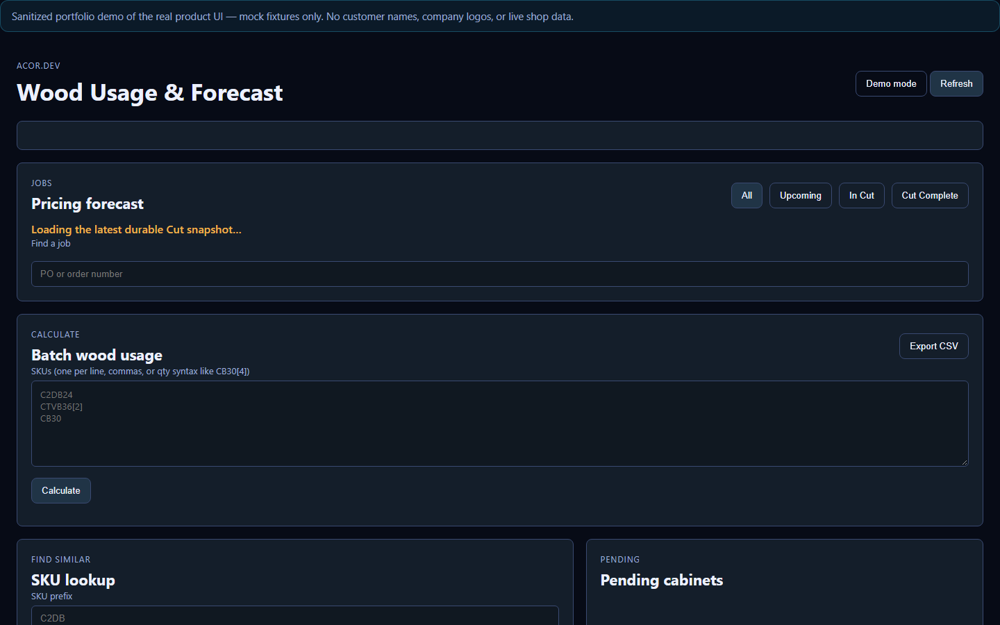

Manufacturing software · geometry · CNC · operations
Job data in. Traceable production files out.
I build systems for production planning, geometry generation, CNC posting, machine-station handoff, warehouse operations and reporting—with explicit validation at every boundary.
This portfolio separates tested source behavior, accepted packages, sanitized simulations and external systems that were not demonstrated. The public examples use invented data only.
Source tested
One controlled information chain
- 01Job intakevalidated snapshot + identity
- 02Production planclaims, capacity + exact selection
- 03Geometryrecipe preflight + atomic DXF set
-
04Canonical nestone layout, independent posts
TAPXPR / NC
- 05Station custodyverify, back up, stage + roll back
Generation ≠ release ≠ load ≠ machine run ≠ completion
Flagship work
Three manufacturing problems, shown through their evidence.
These case studies focus on transformation, custody and refusal behavior—not just interface screenshots.
Source tested01
Geometry and CNC
One geometry set. One canonical nest. Two machine formats.
Supported Access/recipe inputs become an atomic DXF set, then one nested definition feeds independent Omni/Fanuc TAP and Syntec XPR/NC posts. Unsupported operations stop the set before publication.
- Whole-set recipe preflight
- Independent format outcomes
- Artifact hashes and provenance
Source tested02
Production traceability
An exact request becomes a frozen plan and verified receipt.
Production requests select explicit job and item identities, capture a plan hash, reject stale or duplicate intent, and verify each generated artifact before recording the result.
- Exact PO + item identity
- Duplicate and re-cut controls
- Receipt hashes and file sizes
Package evidenced03
Station handoff
Programs move to a station as a transaction, not a loose file copy.
Station applications keep source identity, stage complete sets, preserve the previous local state and roll back an interrupted load. Operators remain in control of the physical machine cycle.
- Backup and transactional staging
- Local-first status evidence
- Read-only controller observations
Interactive portfolio builds
Useful slices of the workflow—not claims of a live factory connection.
These static demos use invented fixtures and no backend login. They preserve recognizable interface and workflow patterns, but they do not contact an ERP, network share, printer, scanner or machine.

Sanitized simulationCut Operations
Explore planning, queue, packet, label and exception surfaces using an isolated fixture.
No ERP refresh, print action or CNC output leaves the browser demo.
Open the interface →
Sanitized simulationPallet Locator
Search invented jobs, place a pallet, move it and undo the move on a fictional map.
The map and placement records are demo-only and reset locally.
Open the interface →
Sanitized simulationMaterial and Machine-Time Forecast
Try batch SKU input, material estimates, runtime projections and missing-catalog handling.
Values are illustrative and are not company pricing or production forecasts.
Open the interface →
Demo rebuild in progress
The next demo release will share one coherent synthetic production day across Cut, station, material and pallet views. The existing interfaces remain available while that guided story is rebuilt.
Active developmentOlder public slice
Standalone product
Warehouse Floor is much larger than the current map demo.
A spatial operations system for mapping departments, racks, zones and pallets; finding stock; coordinating regular inventory and annual counts; and carrying reviewed layout changes across shared workstations.
The accessible repository already separates a User/Admin web workspace, a customer layout editor and a private publication boundary. The owner reports that even that source snapshot is behind current work, so the existing public demo is presented as an older simplified slice—not the full current product.
Facility model
Buildings, departments, racks, zones, pallets and identity-preserving layout updates.
Warehouse operations
Stock search, product homes, placement, cross members, inventory and location detail.
Annual count
Teams, assignments, count/recount requests, management progress, review and paperwork.
Shared custody
LAN or SQL-backed collaboration, local backups, map-update reconciliation and offline boundaries.
Capability and maturity
What is demonstrated—and what remains outside the browser.
| Capability | Evidence | Public presentation | Boundary |
|---|---|---|---|
| ERP snapshot and queue history | Source tested | Synthetic input and offline-fallback story | Live ERP not connected |
| MDB → DXF → canonical nesting | Source tested | Flagship geometry case study | Supported recipe subset only |
| Omni TAP + Python XPR/NC | Source tested | Independent sibling outputs | No public physical cut claim |
| Station program custody | Package evidenced | Simulated folder staging and rollback | Physical controllers uninspected |
| Part Studio | Package evidenced | Hash-gated inspection story | Inspection only; no cut approval |
| AutoCAD and Fusion tooling | Experimental | Architecture/transfer overview | Separate repository; host validation incomplete |
Selected supporting work
Smaller products with a clear place in the system.
Rover
A Windows utility for controlled CAM/CNC tool-name remapping across a file set, with dry-run preview and optional backups.
View repository →Part Studio
A hash-gated, inspection-only browser for a governed binary machining corpus. It opens temporary copies and leaves the source library unchanged.
Operational reporting
Day briefs, end-of-day views, reconciliation and log viewers preserve the difference between ERP, station and controller evidence.
About the work
Software for the points where manufacturing handoffs usually become fragile.
My work focuses on practical constraints: existing ERP behavior, mixed-age Windows machines, network interruptions, proprietary formats, operator adoption and the need to recover safely when an external dependency fails.
What this portfolio shows
Inputs, transformations, outputs, refusal behavior and evidence—not only finished screens.
What it does not claim
A passing test or generated file is not automatically a safe physical cut or a live deployed integration.